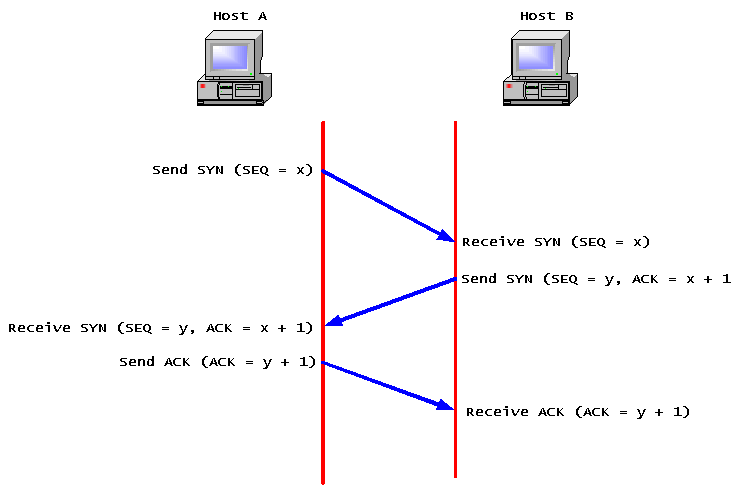
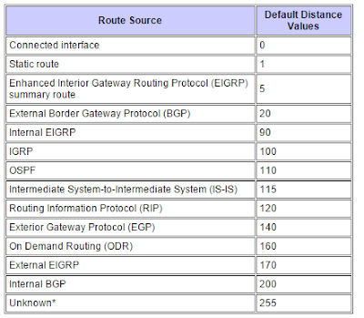

Cisco-CCNA
Cisco Security
User and access management
Enable secret takes precedence over enable password.
enable password potato enable secret potato2 enable password = potato2
Enable AAA (allow user with privilege 15 to login straight into enable mode)
conf t aaa new-model aaa authentication login default group local aaa authorization exec default group local
Create user with default privilege 15 level
conf t username $USERNAME privilege 15 secret $PASSWORD
login = password and username of the vty itself. login local = Local username database
conf t line con 0 login local exec-timeout 0 0 logging synchronous
Line VTY user are set to privilege 15 automatically.
conf t line vty 0 15 privilege level 15
service password-encryption
Port-Security
Enabling port security on port Cannot be enabled on a trunk/dynamic/auto port. Must be an access port.
conf t interface gigabitethernet0/1 switchport port-security
Keep MAC addresses when port-shutdown or switch reload.
conf t interface gigabitethernet0/1 switchport port-security switchport port-security mac-address sticky
MAC aging
Dynamic MAC aging default = 0
absolute timer = Counts down irregardless of traffic
inactivity timer = resets when traffic is seen from MAC.
maximum - Default 1
If you raise the number of max MAC addresses on a port, you can run static and dynamic MAC detection.
MAC address conversion
| Character | HEX |
|---|---|
| a | 10 |
| b | 11 |
| c | 12 |
| d | 13 |
| e | 14 |
| f | 15 |
- One digit hex ---> 0-9 or A-F
- Two digit hex ---> Left to Right, units of 16 ---> units of 1.
Hexadecimal A7 to decimal
A = 10 units of 16 (A=16) ---> 160
7 = 7 units of 1 ---> 7
160 + 7 = 167
Decimal 241 to Hexadecimal 1. f = 15 * 16 2. 1 = 1 * 1 3. F1
Violation option
protect - Drops traffic, no SYSLOG, no SNMP Trap, no counters increased
restrict - Drops traffic, generate SNMP trap, generate SYSLOG.
shutdown - Default, increase violation counters, Port shutdown in error-disabled.
Show port-security commands
show port-security interface fastethernet 0/1
show port-security address
Error disabled recovery
Default recovery 300 seconds
conf t errordisable recovery cause ? errordisable recovery cause psecure-violation errdisable recovery interval 30
show errdisable recovery
VLAN interfaces (SVI)
- Layer 2 vlan must exist
- Physical interface with vlan attached to must be in UP and UP.
- Can be a trunk with vlan allowed or an access port with the vlan.
Autonegociation - Speed and Duplex
- Highest speed supported by both is used.
- Full duplex supported by both is used.
- DO NOT set one side auto and the other side forced.
- Symptoms --> Slow Upload, irregular speed, packet loss, CRC/Runt frames errors on the interface
Interface range
interface range fastethernet 0/1-24 interface range fastethernet 0/1-24,25,26
TCP and UDP
TCP
- Guarantees delivery of segments
- Error Detection and recovery
- Sequence numbers and ACK to recover from lost/corrupt packets
- TCP Windowing
- Connection-oriented
- Three-way handshake
- SYN FLAG / ACK FLAG
- Source ---> Destination : SYN
- Destination ---> Source : SYN-ACK
- Source ---> Destination : ACK
- Connection Established
- When connection is terminated - 4 Way Handshake
- Client ---> Server : FIN, ACK
- Client <--- Server : ACK
- Client <--- Server : ACK, FIN
- Client ---> Server : ACK
- Flow control and Windowing
- The receiver increases the Window size / controls the flow.
- The receiver asks for more data when traffic flows well --> No errors/retransmits on packets.

UDP
- "Best Effort"
- No Error Detection
- No Windowing
- Connectionless - Data is sent without the remote peer being aware.
Port Numbers
Well-known port numbers:
| Protocol / Transport | Port |
|---|---|
| HTTPS / TCP | 443 |
| SNMP / UDP | 161 |
| SMTP / TCP | 25 |
| TELNET / TCP | 22 |
| SSH / TCP | 23 |
Socket ---> Combination of an ipaddress and a port number.
192.168.1.1:10000
DHCP
DORA
1. Discover - Broadcast from client.
2. Offer - DHCP server receives Discover and sends unicast offer to client.
3. Request - Client sends request for the offered IP address.
4. Ack - DHCP server ack the client request and assigns the IP.
Routing - Static Routes
ip route destination_subnet destination_mask [local-router-exit-interface | next-hop-ip-address] ip route 2.2.2.2 255.255.255.0 192.168.1.1 #Default Route ip route 0.0.0.0 0.0.0.0 [local-router-exit-interface | next-hop-ip-address]
Routing - Distance Vector Protocols - RIP
RIPv1 / IGRP
- Full route table update at fixed interval. Every 30 seconds for RIP.
- Do not subnet VLSM.
- No Packet authentication.
RIPv2
- Supports VLSM.
- Multicasts from router updates - 224.0.0.9 instead of broadcast (RIPv1)
- Supports Authentication.
- Supports route summarization.
Split Horizon
- A route cannot be advertised via an interface that received the route in the first place.
- No split horizon on frame-relay.
Route Poisoning
- When all routers have the same routing table --> State of convergence
- Slow to converge
- When router removes a subnet that is local to itself.
- Send update that shows 16 hops for the removed subnet.
- Other routers will receive the update and remove the route from their own routing tables as 16 hops marks a subnet as unreachable.
Hops
- Metric for RIPv2.
- Measures of distance to reach a specific subnet.
- Does not care about interface speed - only hop count.
Enabling RIPv2
conf t router rip #Show protocols active on router show ip protocols #Enable specific version of RIPv2 per interface or global. interface gig0/1 ip rip send version 2 conf t router rip rip version 2 network 10.10.10.0 network 10.10.11.0 #Disable auto summary conf t router rip no auto-summary #Enable split Horizon interface serial0/1/0 ip split-horizon
Confirming that RIPV2 works.
show ip protocols show ip rip database
Clear RIP routes.
clear ip route *
Passive interfaces
Prevents sending RIPv2 updates from interfaces where it's not necessary.
conf t router rip passive-interface fastethernet0/1 passive-interface fastethernet0/2
conf t router rip passive-interface default no passive-interface fastethernet0/1 no passive-interface fastethernet0/2
RIP Load Balancing
1) If a subnet is reachable through two paths with the same hope count --> Load balance across the two links.
Disabling equal cost load balancing
conf t router rip maximum-path 1
Default route in RIP
conf t router rip default-information originate
Routing Administrative distance
1) The prefix mask is considered first. The more specific route is installed.
2) If the prefix max is "=" ---> Administrative Distance is checked. The route with the lowest ADs wins.

Floating static routes
If a route with a lower AD is removed from the routing table, the static route will be added and become active.
conf t ip route 2.2.2.0 255.255.255.0 21.1.1.2 [static route metric here | higher than routing protocol 1-255 ]
Subnetting
| 128 | 64 | 32 | 16 | 8 | 4 | 2 | 1 | |
|---|---|---|---|---|---|---|---|---|
| 45 | 0 | 0 | 0 | 0 | 1 | 1 | 0 | 1 |
200.17.100.3
| 128 | 64 | 32 | 16 | 8 | 4 | 2 | 1 | |
|---|---|---|---|---|---|---|---|---|
| 200 | 1 | 1 | 0 | 0 | 1 | 0 | 0 | 0 |
| 17 | 0 | 0 | 0 | 1 | 0 | 0 | 0 | 1 |
| 100 | 0 | 1 | 1 | 0 | 0 | 1 | 0 | 0 |
| 3 | 0 | 0 | 0 | 0 | 0 | 0 | 1 | 1 |
11001000.00010001.01100100.00000011
Network class
| Class A | Class B | Class C | |
|---|---|---|---|
| 1st Octet range | 1 - 126 | 128 - 191 | 192 - 223 |
| Network Mask | 255.0.0.0 - /8 | 255.255.0.0 - /16 | 255.255.255.0 - /24 |
Number of subnet in a network - 200.1.1.0 /27
- Find the class of the subnet --> Class C (+192)
- A class C is a /24 by default.
- /27 - /24 = 3 subnet bits.
- Number of subnet --> 2^Number_subnet_bits_remaining --> 2^3 --> 2 * 2 * 2 = 8 subnets
Number of hosts per subnet - 200.1.1.0 /27
- Find the number of host bits --> /32 - /27 --> /5 host bits
- Find the number of valid host per subnet - remove subnet and broadcast address.
- (2^(number of host bits))-2 --> 2^5 --> 2 * 2 * 2 * 2 * 2 --> 32 - 2 --> 30
Find the Subnet of an IP address - 10.17.2.14/18
- /18 = First two octets = 16 bits + 2 bits from third octet
- 10.17.00000010
- 10.17.00 000000 --> Total of 18 bits for subnet address
- Subnet address = 10.17.0.0/18
Find the broadcast and range of valid addresses in subnet - 210.46.110.0 /25
- /32 - /25 = last 7 bits --> host bits
- 01111111 --> 64 + 32 +16 +8 + 4 + 2 +1 --> 96 + 16 + 15 --> 96 + 31 --> Broadcast = 210.46.110.127
Find the broadcast and range of valid addresses in subnet - 150.10.64.0 /18
- /32 - /18 = last 14 bits --> host bits
| 128 | 64 | 32 | 16 | 8 | 4 | 2 | 1 | |
|---|---|---|---|---|---|---|---|---|
| 64 | 0 | 1 | 0 | 0 | 0 | 0 | 0 | 0 |
- Broadcast --> 150.10.01111111.11111111 --> 150.10.127.255
- Range of valid addresses --> 150.10.64.1 to 150.10.127.254
Access Lists
- All ACL have an implicit DENY ALL ALL at the end.
- The search is done TOP to BOTTOM
- When a match is found, that's the end of the search. Any remaining lines are not examined.
Wildcard masks
- 0 --> All bits must match.
- 1 --> Does not need to match.
Standard ACL
- Can only match on the SOURCE ip address of a packet.
- Standard Access list number : 1 --> 99
- Standard expanded access list number : 1300 --> 1999
<1-99> Standard IP access-list number <1300-1999> Standard IP access-list number (expanded range) WORD Access-list name
ip access-list standard 5 deny 3.3.3.0 0.0.0.255 interface fastethernet0 ip access-group 5 in
Extended ACL
- Can match on source AND/OR destination.
Named Extended/Standard ACL
- Allows naming of Access list instead of number.
- Valid for Standard and Extended ACL.
- Cannot have an Extended and Standard ACL with the same name.
- You need to use
ip access-list standard | extendedinstead ofaccess-list
conf t ip access-list extended BLOCK11 deny ip 3.3.3.0 0.0.0.255 11.11.11.0 0.0.0.255 permet ip any any
ACL on VTY lines
conf t line vty 0 14 access-class MGMT-NETWORKS in
ACL Sequence numbers
- Allows moving and deletion of specific lines within the ACL.
- You cannot move or reassign a sequence number.
- You need to delete and recreate the line with the new sequence number.
conf t ip access-list extended 101 no $SEQUENCE_NUMVER
Where to apply ACLs
- Apply Extended ACLs as close to the source of the traffic.
- Apply Standard ACL as close to the destination as possible.
NTP - Network Time Protocol
- Creates a single source of time for all device on the network.
- UDP Port 123
Stratum - Level of accuracy of the NTP server.
- 0 --> Atomic clocks
- 1 --> Gets time from a stratum 0 NTP server.
NTP Modes
- Master : Set the device itself as the master and will synch with itself to synchronize time.
- Peer : The two devices will dynamically synchronize time between the two.
- Server : The client device will ask time from the server. Does not send time synchronize requests to the server.
- Broadcast Mode : Broadcast mode for NTP packets.
!*** Set the device itself as the master NTP server. conf t ntp master
!*** Set the NTP server for the device. conf t ntp server ntp.nist.ca
conf t ntp peer ntp.potato.com
!*** Show all ntp services from which the device will sync it's clock. Also shows the preferred device. show ntp associations show ntp status show clock
!*** Under device interface configuration. !*** Sets broadcast server mode (send updates) conf t interface serial 0/1/0 ntp broadcast !*** Set client broadcast mode conf t interface serial 0/1/0 ntp broadcast client
NAT / PAT - Network Address Translation / Port Address Translation
- Local --> Private address
-
Global --> Public routable address
-
Inside Local --> Local Address being translated to External.
- Inside Global --> External Address that is used during the NAT.
- Outside Local --> Non-routable addresses of the host on the remote network.
- Outside Global --> Routable addresses of the host on the remote network.
Static NAT
- One to one mapping of an Inside Local to a Inside Global.
- I.E : Map a public IP to the internal IP of a server.
!*** Place on the interfaces closest to the hosts. ip nat inside !*** Place on the WAN interface. ip nat outside !*** Setup Static NAT / One to one mapping ip nat inside source static 10.1.1.2 200.1.1.1 !*** Show translations show ip nat translations !*** Show NAT statistics show ip nat statistics !*** clear ip nat table to reset the NAT mappings clear ip nat translations *
Dynamic NAT
Allow the NAT of a pool of internal address to a pool of outside addresses.
!*** Create IP NAT Pool ip nat pool CCNA 200.1.1.1 200.1.1.5 prefix-length 24 !*** Create the access-list of internal host that will be NAT. access-list 2 permit host 10.1.1.2 access-list 2 permit host 10.1.1.22 !*** Create the NAT function for the access-list 2 and the pool CCNA ip nat inside source list 2 pool CCNA
Port address translation - NAT Overload
Allows the mapping of multiple inside addresses to a single outside address using a combination of the IP address / Port Number in ordre to uniquely identify each flow of data.
!*** Overload of the inside addresses to the outside address ip nat inside source list 2 interface serial0/1/0 overload
IPV6
- Solution to the IPv4 exhaustion.